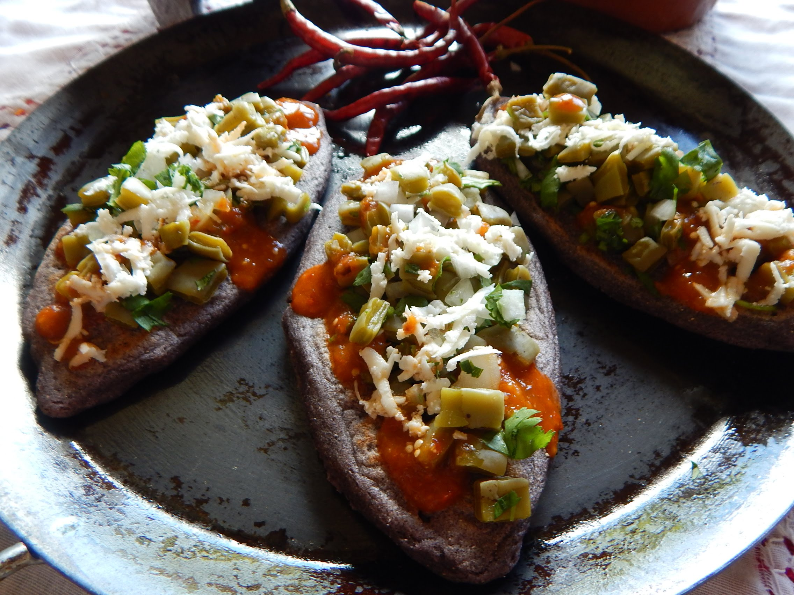
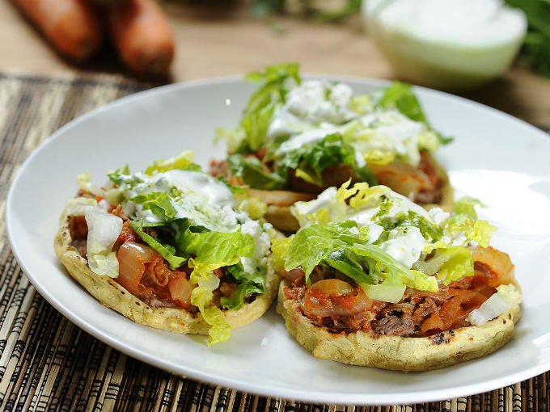
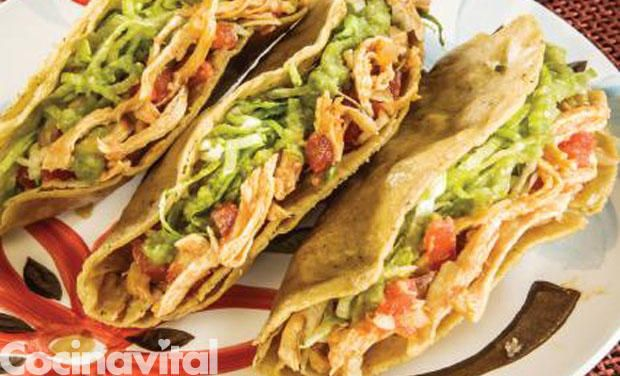
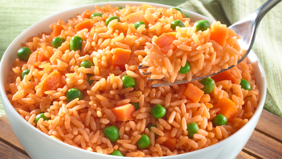
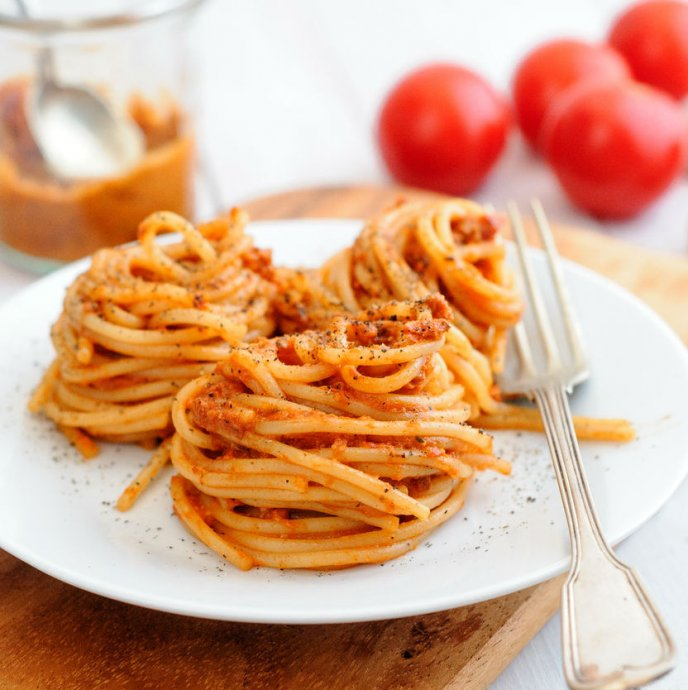
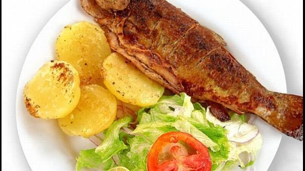
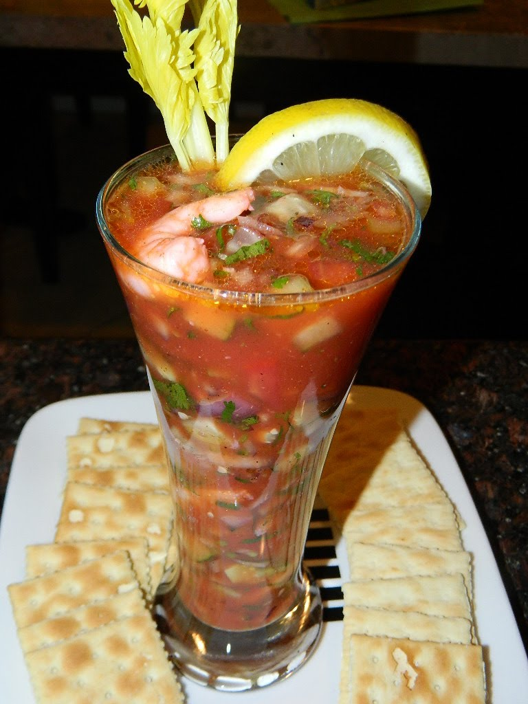
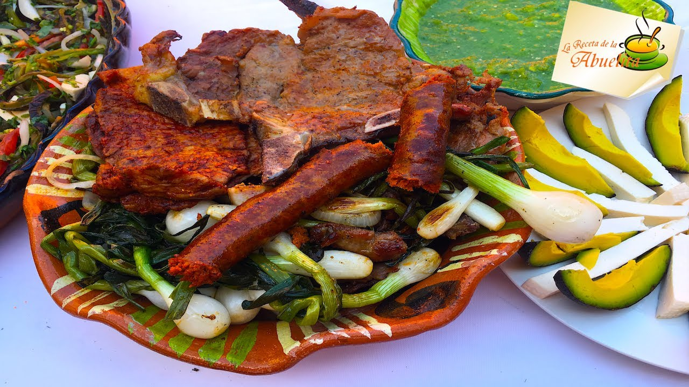
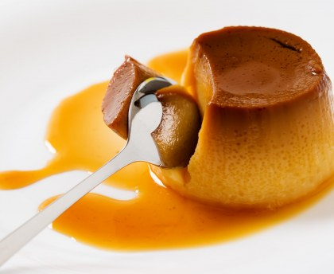

Tlacoyos

- 1 kilo de masa de maíz negro o blanco.
- 1 kilo de frijol negro cocido con 3 hojas de aguacate y 1 cucharadita de tequesquite.
- 10 chiles serranos.
- 2 cucharadas de manteca.
- Sal al gusto.
- Queso fresco desmoronado para espolvorear.
- Salsa verde o roja para acompañar.
- Cebolla picada.
- Cilantro Picado o Lechuga
Sopes Y Antojitos

- 4 cucharadas soperas de aceite vegetal o manteca de puerco.
- Frijoles refritos.
- Carne de res o de pollo deshebrado.
- Lechuga finamente picada.
- Crema.
- Queso fresco desmoronado.
- Cebolla blanca finamente picada.
- >Salsa roja o verde al gusto.
Quesadillas

- Tortillas hechas a mano.
- Aceite de oliva o manteca.
- Ingrediente al gusto
- Cebolla finamente picada.
- Lechuga finamente picada.
- Sal roja o verde
Arroz

- 3 cucharadas de aceite vegetal.
- 1 taza de arroz.
- 1 cucharadita de sal de ajo.
- ½ cucharadita de comino en polvo.
- ¼ de taza de cebolla picada.
- Zanaoria en cuadros pequeños y
- ½ taza de puré de jitomate.
- 2 tazas de caldo de pollo.
Spaquetti

- 1 paquete (de 200 gramos) de espagueti.
- 1/4 de crema agria.
- 1 cucharada de mantequilla.
- 1 taza de puré de jitomate.
- 1 cubito de consomé de pollo.
- Queso parmesano.
- Agua.
- Sal.
Truchas

- 2 cucharadas de mantequilla derretida, divididas.
- 2 cucharadas de aceite de oliva.
- 2 cucharaditas de sal de ajo.
- 2 cucharaditas de comino.
- 2 cucharaditas de pimienta molida fresca.
- 1 mitad de una trucha entera de 8-12 oz, sin cabeza ni espinas
- 4 rodajas de limón.
- 1/2 taza de cilantro lavado y picado.
Mariscos

- ½ Kilo de camarón, cocido y sin cáscara.
- 15 Ostiones con ½ taza de su jugo.
- 1 Taza de pulpa de jaiba, cocida.
- 1 Taza de carne de cangrejo, picada.
- 6 Almejas grandes, picadas.
- 3 Jitomates, finamente picados.
- 2 Cucharadas de salsa cátsup.
- ¼ De taza de jugo de naranja.
Carne Asada

- 1/2 Taza de tequila.
- 1/4 Taza de jugo de limón fresco.
- 1/4 Taza de jugo de naranja fresco.
- 4 Dientes de ajo triturados.
- 1/2 Cebolla morada mediana en rodajas.
- 1 Cucharadita de sal.
- 1 Cucharadita de pimienta fresca molida.
- 2 A 3 lbs de carne de falda (flank steak).
Flan

- 3/4 Taza de azúcar.
- 4 Huevos.
- 1 Lata (397 gramos) de leche condensada.
- 1 Taza de leche natural.
- 1 Cucharadita de vainilla.
- 1 Paquete (190 gramos) de queso crema
Cantaritos
- Sal para escarchar.
Hielo.
- 1 1/2 oz (1 caballito) de tequila blanco.
- 1 Limón grande, su jugo.
- 2 Cucharadas de jugo de naranja, fresco.
- 2 Cucharadas de jugo de toronja, fresco.
Squirt, al gusto.
- Gajos de limón, naranja y toronja (con cáscara) para decorar.